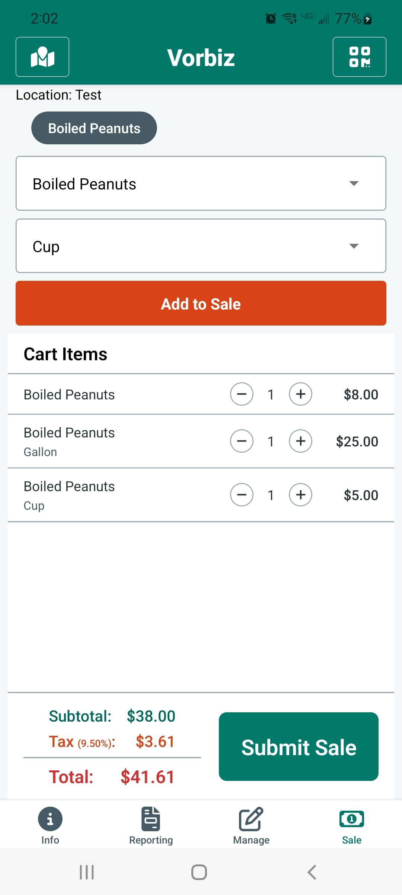

Taxes & licensing resources
Taxes & licensing questions
Use these guides to understand sales tax, income reporting, and the permits vendors need to sell legally.
Featured tax guidance
Start with these essentials to stay compliant at your next market.
All taxes & licensing questions
A searchable index of tax and licensing questions from market vendors.
— questions
- How do taxes work when selling at craft fairs?
- Do I need to collect sales tax at craft fairs, and how do I do it?
- How do I remit sales tax after the event to the state/county?
- Do I need to get a sales tax permit or special license before selling?
- Am I required to have a business license to sell at craft fairs?
- If I only sell occasionally as a hobby, do I still have to report income and pay taxes?
- Is there an income threshold under which I don’t need to pay taxes?
- Hobby vs business: how are craft fair sellers taxed?
- Should I form an LLC or business entity for selling at fairs?
- What taxes beyond sales tax do I need to pay on my craft income?
- Can I deduct my craft fair expenses on my taxes?
- Do I need to pay estimated quarterly taxes for my craft business?
- How do I handle sales tax if I sell in another state?
- Will I receive any tax forms (like a 1099-K) for craft fair sales?
- Do I need a separate Tax ID (EIN), or can I just use my Social Security Number?
- How do I handle “tax included” pricing when reporting taxes?
- I only do one or two craft fairs a year—do I really need to go through all the tax registrations?
- I forgot to get a tax permit before selling—what do I do after the fact?
- Do craft fair organizers report our sales or handle any taxes for us?
- Do I need to give customers receipts for tax purposes?
- If I have a day job, do I have to report my craft fair earnings on top of my salary?
- Are there tax advantages to forming an LLC or corporation?
- What happens if I don’t report my craft income?
- How do you keep track of cash sales?
- Does Square/PayPal report my sales to the IRS?
- If I sell food items, are they tax-exempt?
- How do I handle sales tax in multiple jurisdictions?
- Do I have to file monthly/quarterly sales tax returns even in months I don’t sell?
- What records do I need to keep for taxes?
- Should I use an accountant or tax software for my small craft business taxes?
- If I donate some of my profits or items to charity, can I deduct that?
- Do I need separate tax forms since I’m self-employed through crafts?
- What’s the deal with self-employment tax?
- If I reinvest all my earnings into more supplies, do I still owe taxes on it?
- I’ve heard of Schedule C “hobby loss” rules — what happens if my expenses are more than my sales?
- How do I handle taxes if I do fairs in a neighboring state?
- Any tax tips for craft fair sellers?

Other topics
Explore more vendor question hubs.